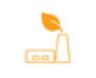
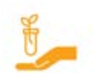
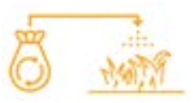

Circulaire stad
Rotterdam ontwikkelt zich als een stad, haven en regio, die voorop loopt in de transitie naar duurzame energie en circulaire processen.
Wijken worden aardgasvrij en de haveneconomie maakt een overgang door naar schonere energie. Rotterdam draagt zo bij aan een toekomstbestendige wereld, beperking van klimaatverandering en vernieuwing van de economie.
 | Eigen initiatief Alle rotterdammers worden gestimuleerd tot het nemen van initiatief om zo bij te dragen aan nieuwe circulaire oplossingen |
 | CO2neutraal Rotterdam is in de toekomst co2-neutraal. Daarmee verkleinen we onze ecologische voetafdruk |
 | Experimenteel In rotterdam is veel ruimte voor experimenten en leren we van nieuwe benaderingen om te komen tot innovaties |
 | Reststof = grondstof Afval bestaat niet meer. We zien reststoffen als grondstoffen, waardoor er steeds minder nieuwe grondstoffen nodig zijn |
 | Leiderschap Rotterdam loopt voorop in grensverleggende circulaire initiatieven en toont daarmee leiderschap |
Wat is een circulaire stad?
In de circulaire stad bestaat geen afval. Dat komt doordat bewoners en bedrijven efficiënter omgaan met energie, water en grondstoffen. Fabrikanten maken slimmer ontworpen producten met minder materiaal en hergebruiken daar zoveel mogelijk van. Afval is dé nieuwe grondstof in de circulaire stad: alles wat Rotterdammers gebruiken, hergebruiken ze continu opnieuw. Om dit mogelijk te maken, komt er een eind aan de lijn ‘produceren, consumeren, weggooien’. In plaats daarvan maken we de cirkel rond. Zo besparen we behalve energie, water en grondstoffen ook het milieu door de CO2-uitstoot te verminderen. Ook wordt energie opgewekt uit duurzame bronnen. Daarnaast stimuleren we in de circulaire stad innovatie, nieuwe bedrijvigheid en werkgelegenheid. Door samenwerking en informatiedeling komen nieuwe interessante verbindingen tot stand die leiden tot grensverleggende circulaire initiatieven.
Motivatie circulaire stad
Waarom de circulaire stad een belangrijk perspectief is voor rotterdam.
Hergebruik van grondstoffen
De verwachting is dat de beperkte beschikbaarheid van grondstoffen een van de grootste veiligheidsrisico’s van deze eeuw wordt. Uitputting van grondstoffen, vooral de zogenoemde ‘Rare Earth Metals’ (vooral gebruikt voor mobiele telefoons en afkomstig uit China), en de ingrepen in natuurlijke systemen om grondstoffen te winnen, hebben steeds grotere negatieve gevolgen voor de ecosystemen. Daarnaast zijn sommige grondstoffen slechts op een aantal plekken in de wereld winbaar. Daarom is het belangrijk dat we in Rotterdam zuiniger omgaan met de onze grondstoffen. Door de toegenomen welvaart is de hoeveelheid huishoudelijk afval per Rotterdammer de afgelopen zestig jaar bijna verviervoudigd. Rotterdammers produceren gemiddeld 489 kilo afval per persoon per jaar. Veel afval is echter nog heel goed bruikbaar. Door afval te scheiden besparen we water, grondstoffen en energie. Hiervoor is het van belang dat we ruimte maken om afval op te slaan voor recycling en hergebruik. De druk op de ruimte in Rotterdam is echter groot. Daarom zijn innovatieve oplossingen nodig. Verder zorgen de bouwsector en de inrichting en het beheer van de openbare ruimte voor veel afval. Ook hier liggen kansen voor meer circulaire concepten.
Van eigendom naar gebruik
Veel producten worden vervangen omdat er een mooiere of betere versie op de markt komt. Daarom maken producenten producten die snel stuk gaan. Mensen en bedrijven geven echter steeds minder om eigendom, maar willen wel betalen voor het gebruik van een product. Prestatie en service zijn hierbij doorslaggevend. Dit betekent dat je geen product, maar een dienst aanschaft. Iemand huurt bijvoorbeeld licht in plaats van een lamp te kopen. Deze ontwikkeling stimuleert de producent een lamp te maken die heel lang meegaat en zo min mogelijk energie verbruikt.
Tegelijkertijd gebruiken mensen lang niet alle producten dagelijks. Het gebruik van een boormachine, barbecue of statafel is vaak slechts enkele malen per jaar. Verschillende websites maken het mogelijk deze producten eenvoudig te lenen van iemand uit de buurt. Het zelfde geldt voor het autogebruik, dat vooral in grote steden afneemt. Rotterdam wil het delen van auto’s op een hoger plan tillen door te experimenteren met deelauto’s voor wijken.
Vernieuwing economie
Digitalisering en verduurzaming van energieopwekking en efficiënt gebruik van productiesystemen, vervoersketens en dienstverlening hebben grote gevolgen voor de economische bedrijvigheid in Rotterdam. Het gaat om vernieuwing én om doorontwikkeling van de bestaande bedrijvigheid. Zo kan de haven een grote rol spelen in opkomende markten van offshore windenergie en het ontmantelen van olie- en gasplatformen. Maasvlakte II kan hieraan ruimte bieden. Op deze manier ontstaat hier nieuwe economische bedrijvigheid en werkgelegenheid op alle beroepsniveaus.
Daarnaast voelen steeds meer Rotterdammers de behoefte om een steentje bij te dragen aan een toekomstbestendige wereld en beperking van de klimaatverandering. Het aantal burgerinitiatieven stijgt de laatste jaren. Rotterdammers nemen zelf het heft in handen door de oprichting van energie- zorg-, voedsel, en andere coöperaties.
Klimaatbeleid
Om de wereldwijde uitstoot van broeikasgassen terug te brengen, heeft Nederland samen met andere landen met het Parijsakkoord in 2015 getekend voor een ambitieus klimaatbeleid.
Alle landen streven de opwarming te beperken tot maximaal 1,5 graad. Verder wordt in het regeerakkoord van het kabinet Rutte-III een emissiedoel van 49% reductie op broeikasgassen in 2030 genoemd.
Voor Rotterdam ligt er hier een grote opgave voor de haven, waar veel bedrijven veel CO2 uitstoten. Tegelijkertijd hebben deze bedrijven veel kennis van energie, energie-intensieve productieprocessen en CO2-reductie. Dat maakt de haven van Rotterdam bij uitstek geschikt om grootschalige toepassingen van techniek te ontwikkelen om de energietransitie een impuls te geven en de CO2-uitstoot fors terug te brengen. Daarnaast is verbetering nodig van het goederenvervoer van en naar de haven. Dat kan door een efficiëntere logistiek en bevordering van elektrisch transport. Het vervoer van goederen zorgt momenteel nog voor veel CO2 en fijnstof. Maar ook de gebouwde omgeving zorgt nog voor erg veel CO2-uitstoot.
Duurzaamheid
We willen enerzijds energie besparen en anderzijds de nog steeds benodigde energie duurzaam gaan opwekken. We zetten ons daarom in om zuiniger en slimmer om te gaan met de beschikbare energie. We willen alle kantoren verduurzamen tot energielabel A, alleen energiepositief nieuwbouwen en alle bestaande woonwijken aardgasvrij maken. Ook maken we ons hard voor het opwekken van hernieuwbare energie. Deze energietransitie vraagt om veel meer ruimte. Naast deze vraag om ruimte gaat het om een aanvaardbare ruimtelijke kwaliteit voor de omgeving. Om de mogelijkheden voor energieopwekking te vergroten en te benutten, hebben we een ruimtelijke visie op energie nodig. Waar komen bijvoorbeeld windmolens te staan? En waar zonnepanelen? Hoe kunnen bewoners en bedrijven thermische energie uit de Nieuwe Maas benutten? Hoe kan het warmtenet worden uitgebreid? En hoe zetten Rotterdammers restwarmte en geothermie in? Het gaat hierbij niet alleen om ingrijpende veranderingen in energiebronnen, maar ook om infrastructuren en systemen, die zoveel mogelijk gekoppeld moeten zijn.
René woont in een circulaire stad of buurt
Samen met zestig buurtbewoners is René (40 jaar) een kleine energiecoöperatie gestart. ‘Onze ambitie is om over twee jaar energieneutraal te zijn. Om dat te bereiken zijn alle huizen extra geïsoleerd en van het gasnet afgehaald. Op beschikbare daken zijn zonnepanelen geplaatst en we beheren één van de nieuwe windmolens langs de Maas. Het netwerk van elektrische deelauto’s zorgt voor extra buffercapaciteit op piekmomenten’, vertelt hij trots. Daarnaast is René de drijvende kracht achter de buurtleenapp. ‘Een paar jaar geleden kochten we dit huis en we hebben sindsdien veel zelf verbouwd. Hiervoor hebben we toen allerlei gereedschap aangeschaft. Nadat de ‘klus was geklaard’ lag al dat mooie spul in mijn schuur te verstoffen. Eeuwig zonde. Om andere mensen zo’n enorme kostenpost te besparen, ontwikkelde ik de buurtleenapp waarin buurtgenoten kunnen aangeven wat ze te leen hebben of wat ze graag zouden willen lenen. Wel drie keer per week komt er iemand aan de deur die ik blij kan mak- en met mijn cirkelzaag, slijptol of schuurmachine. En in de zomer regel ik met de buurman dat ik zijn geweldige gasbarbecue zo nu en dan mag lenen. Zo profiteert iedereen van elkaar.’
Dit personage is fictief en is bedoeld ter illustratie. Het voorbeeld geeft weer hoe het perspectief beleefd kan worden en hoe de doorvertaling van de omgevingsvisie in een later stadium gemaakt kan worden.